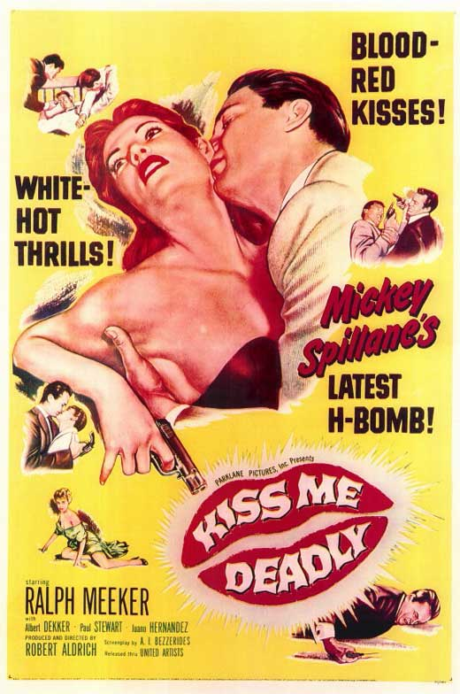

link to trailer, or imbed player
find and insert youtube link to pertinent clips shown by professor, or find stills and attach links to the clips
Discussion Questions
- How is Mike Hammer different from Raymond Chandler's Philip Marlowe?
- What does Gallafent say about the difference between the novel and the film?
- What are Gallafent's major arguments about the women in this film?
- What are the recurrent images in the film?
- What does the ending mean? What do we do with the bomb blast at the end?
- What is the split between the art of the past and modern technology?
- How is race represented in this film?
- Do you think Hammer is un-self aware of his actions as Bannion in The Big Heat
- The bomb - sending noir out with "a bang"
- Recurring images: phones, boxes, speed, women, bombs, technology, violence, sports car, "Remember Me"
- Un-self aware - Scene investigators: He's aware he is bad, but does not know how bad (he think hes 'cool' - not bad). When he is told how bad it is he admits "I didn't know" (Revealing Clip)
- Marlowe vs Hammer: how the environment changes the character and then they have to confront themselves
- Race - Kiss Me, Deadly was more white-wash, black men in the gym and one in the bar - they do exist, in good light (but placed in the film where the scenes could easily be removed for the southern states)
- Women's representation - Mike pimped out his secretary out, or using a sleazy degraded way of doing business. Christine was maybe raped as well as tortured in the film. All women criticize Hammer and are attracted to him. The three main women have a scene where they are only wearing a robe of some sort - trench coat, cotton robe, and a dressing robe with no shoes.
- Un-restored version - they did not go into the sea, were they annihilated?
- If it is the Atomic blast or nuclear annihilation it doesn't matter if they're in the sea or not - it does not save them.